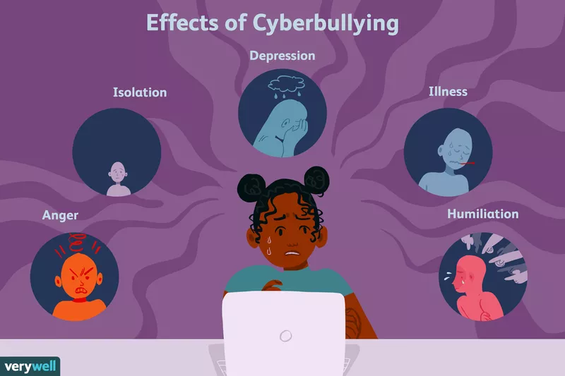

What Is Cyberbullying
Cyberbullying is bullying that takes place over digital devices like cell phones, computers, and tablets. Cyberbullying can occur through SMS, Text, and apps, or online in social media, forums, or gaming where people can view, participate in, or share content. Cyberbullying includes sending, posting, or sharing negative, harmful, false, or mean content about someone else. It can include sharing personal or private information about someone else causing embarrassment or humiliation. Some cyberbullying crosses the line into unlawful or criminal behavior.
The most common places where cyberbullying occurs are:
- Social Media, such as Facebook, Instagram, Snapchat, and Tik Tok
- Text messaging and messaging apps on mobile or tablet devices
- Instant messaging, direct messaging, and online chatting over the internet
- Online forums, chat rooms, and message boards, such as Reddit
- Online gaming communities
Emotional Effects of Cyberbullying
Not surprisingly, cyberbullying is a significant stressor in a young person's life. In fact, research shows that 32% of kids who are targets of cyberbullying report experiencing at least one symptom of stress. In addition to feeling distressed, they also may feel embarrassed, hurt, and even fear for their safety. They may even blame themselves for the cyberbullying
Humiliation
Because cyberbullying occurs in cyberspace, online bullying feels permanent. Kids know that once something is out there, it will always be out there. They can feel exposed, embarrassed, and overwhelmed. When cyberbullying occurs, the nasty posts, messages, or texts can be shared with multitudes of people. The sheer volume of people that know about the bullying can lead to intense feelings of humiliation
Isolation
Cyberbullying sometimes causes kids to be excluded and ostracized at school. Consequently, they often feel alone and isolated. This experience can be particularly painful because friends are crucial at this age. When kids don’t have friends, this can lead to more bullying. When cyberbullying occurs, parents sometimes recommend shutting off the computer or turning off the cell phone. But for many kids, using these devices is considered the most important way they communicate with others. Turning them off often means cutting off their connection with their world, which can make them feel more secluded.
Anger
Many victims of cyberbullying will get angry about what is happening to them. In fact, research indicates that anger is the most common response to cyberbullying (followed by being upset and worried). Some kids that are victimized may even plot revenge and engage in retaliation. Aside from the trouble they could get into, this approach is dangerous because it can keep them locked in the bully-victim cycle. While it's always better to forgive a bully than it is to get even, this is often easier said than done. If your child seems intensely angry over cyberbullying, it may help for them to speak with a counselor or therapist who can teach them to channel that anger in productive ways.
Powerlessness
Victims of cyberbullying often find it difficult to feel safe. They may feel vulnerable and powerless. Typically, these feelings surface because the online bullying can invade their home through a computer or cell phone at any time of day. They no longer have a place where they can escape. Additionally, because the bullies can remain anonymous, this realization may escalate feelings of fear.1 Sometimes kids who are targeted may have no idea who is inflicting the pain, although some cyberbullies choose people they know and have no problem identifying themselves.
Mental Effects of Cyberbullying
When cyberbullying is ongoing, victims may relate to the world around them differently than others. For many, life can feel hopeless and meaningless. They may lose interest in things they once enjoyed and spend less time interacting with family and friends. And, in some cases, depression and thoughts of suicide can set in.
Depression and Anxiety
Victims of cyberbullying may succumb to anxiety, depression, and other stress-related conditions. The added stress of coping with cyberbullying on a regular basis can steal their feelings of happiness and contentment. It also can increase feelings of worry and isolation.
Research has consistently supported the notion that increasing levels of cyberbullying lead to higher levels of depression. In fact, one study found that 93% of those victimized by cyberbullying reported feelings of sadness, powerlessness, and hopelessness.
Low Self-Esteem
Cyberbullying often zeros in on what already makes victims feel most vulnerable. For example, maybe a child who feels insecure about a birthmark ends up being bullied about just that
Even when that's not the case, though, online bullying can have an impact on self-esteem. Targets of bullying may begin to feel intense dissatisfaction with who they are. As a result, they can begin to doubt their worth and value.
Researchers speculate that because young people have an intense psychological need to be part of and accepted by a peer group, cyberbullying may cause psychological maladjustment, reduced well-being, and ultimately low self-esteem.
Academic Issues
Kids being victimized by cyberbullying may lose interest in school. As a result, they often have much higher rates of absenteeism than non-bullied kids. They may skip school to avoid facing the kids cyberbullying them or because they are embarrassed and humiliated by the messages that were shared online.
Their grades may also suffer because they find it difficult to concentrate or study. And in some cases, kids may either drop out of school or lose interest in continuing their education after high school.
Suicidal Thoughts and Self-Harm
Sometimes targets of cyberbullying respond to their intense feelings by harming themselves in some way. For instance, some might engage in self-harm such as cutting or burning themselves. In fact, research has consistently linked bullying and self-harm.
Cyberbullying also increases the risk of suicide. Kids that are constantly tormented by peers through text messages, instant messaging, social media, or apps often begin to feel hopeless and that the only way to relieve the pain is ending their life.
As a result, they may fantasize about dying in order to escape.
Behavioral Effects of Cyberbullyings
Kids who are cyberbullied may display the same behavioral changes as those who are bullied in more traditional ways. For example, they exhibit a loss of interest in activities and engage in secretive behavior. In extreme cases, or when cyberbullying is prolonged, kids sometimes even exhibit more significant behavioral changes. These can include:
- Using drugs or alcohol: Kids who are harassed online are more likely to engage in substance abuse. In fact, one study found that targets of cyberbullying were 2.5 times more likely to use marijuana or engage in binge drinking than their peers.
- Disordered eating: Kids who are cyberbullied may experience changes in eating habits like skipping meals or binge eating. Because their lives feel out of control, they look to their eating patterns as something they can control. These efforts may morph into a full-blown eating disorder, especially if the bullying has caused a distorted body image.
- Sleep disturbances: Experiencing cyberbullying can impact a person's sleep patterns. They may suffer from sleep issues like insomnia, sleeping more than usual, or nightmares.
If you notice that your child is experiencing changes in their eating and sleeping habits, or if they are experiencing increased physical issues, it's important to speak with your child's doctor. These could be signs of bigger issue that needs evaluation.